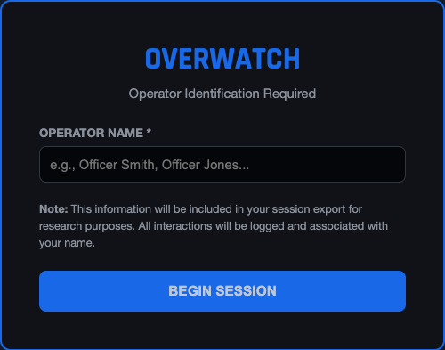
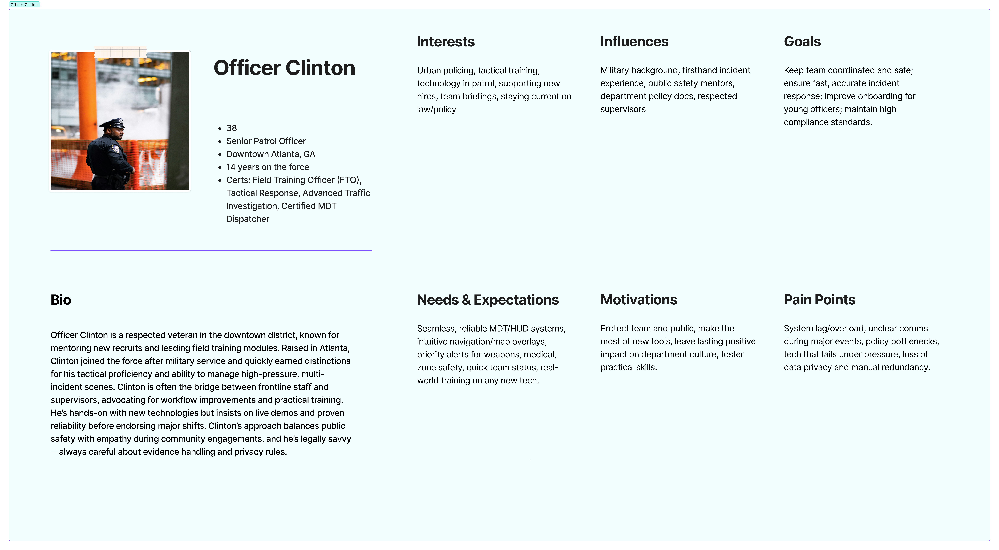
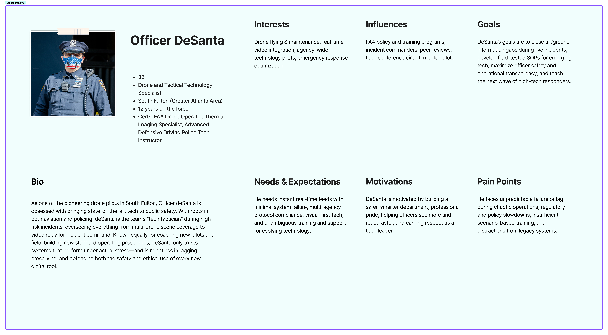
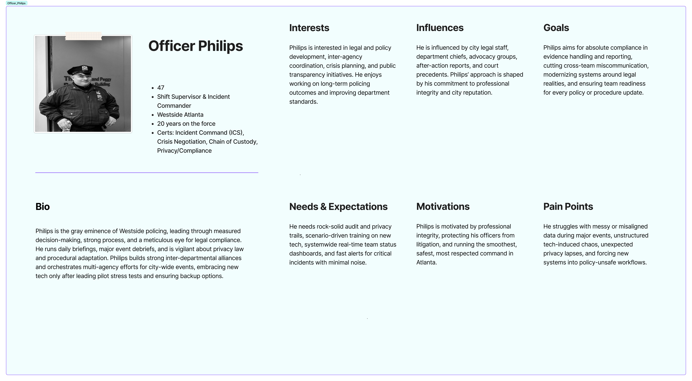
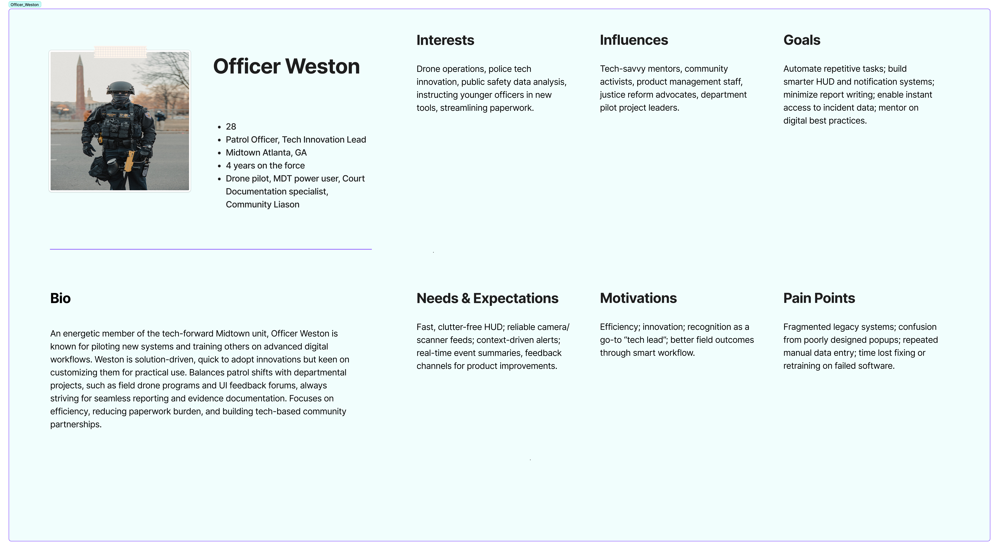
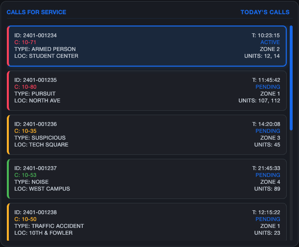
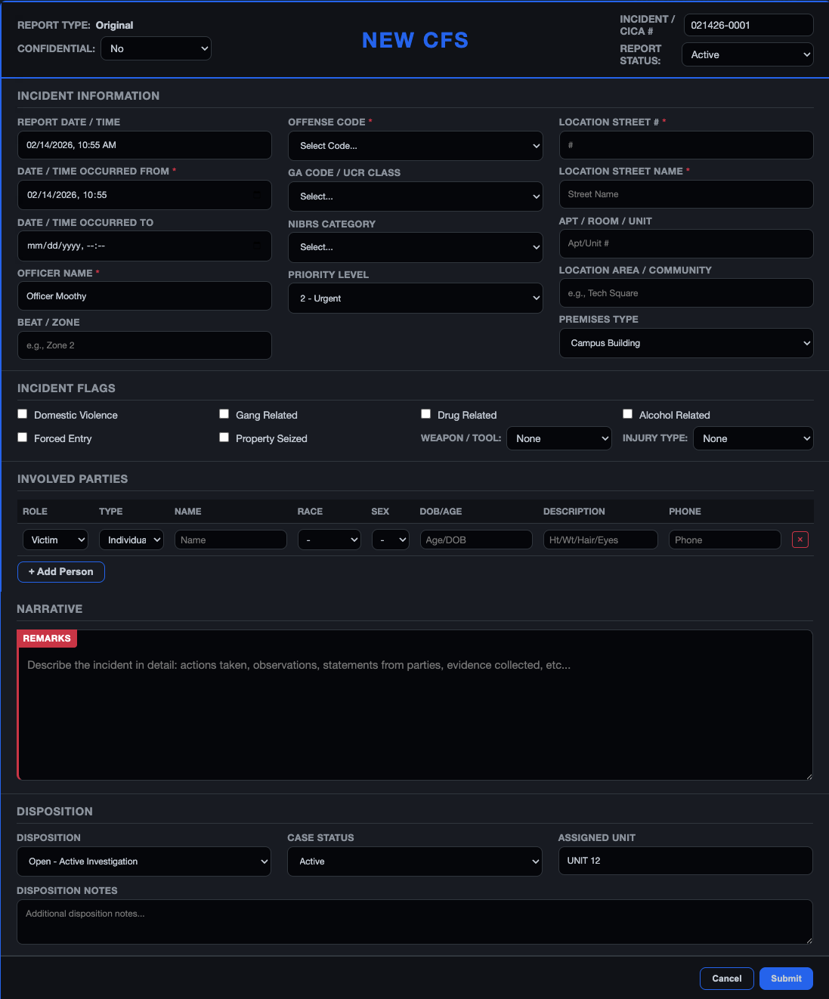

Operator identification
A single required field reduces shift-start friction while tying later actions to a named officer for audit and review.
Police drones capture critical aerial intelligence, but that footage rarely reaches dispatchers in real time. OVERWATCH unifies live drone feeds, officer positions, and incident data into a single command interface.

Police drones capture aerial intelligence during active incidents, but that footage lives in a separate system, operated by a separate person, on a separate screen. Dispatchers coordinate response across radio, CAD systems, and incident notes while mentally tracking priority and toggling between windows.
OVERWATCH synthesizes live drone feeds, officer positions, and incident data into one interface that matches how dispatchers actually think during incidents. I led research and design for this thesis project across seven Georgia law enforcement agencies.
Role
Lead Designer
UX Researcher
Timeline
Aug 2025 – Apr 2026
(9 months)
Team
Solo project
(MS-HCI Thesis)
Tools
Figma, Leaflet.js
D3, HTML/CSS
"This is the first time I've seen drone footage and officer positions on the same screen. I don't have to ask where everyone is." — Dispatch supervisor, Georgia Tech PD
Users: 911 dispatchers, patrol officers, drone pilots, shift supervisors.
What's at stake: Seconds matter. A dispatcher juggling four systems during an armed-person call can miss a location update or send units to the wrong entrance. Fragmented information creates cognitive load that compounds under stress.
The fragmentation problem: Dispatchers today use CAD for call queue, a separate map for officer positions, radio for real-time updates, and have no direct access to drone feeds. Drone pilots relay what they see verbally. If the dispatcher mishears "northeast corner" as "east entrance," officers approach blind.
This isn't about adding a feature. It's about consolidating existing information into one interface that matches how dispatchers actually think during incidents.
30+ interviews with personnel across Atlanta PD, Georgia Tech PD, and Georgia State Patrol. 17 ride-along observations to see dispatch and field operations in real time.
Dispatchers weren't overwhelmed by how much information they handled. They were overwhelmed by how many places they had to look for it. Implication: Consolidation is the design opportunity, not reduction.
Officers expressed high confidence in aerial perspective for situational awareness, but frustration that it rarely reached dispatchers who coordinate response. Implication: The interface must surface drone feeds directly to dispatch, not just pilots.
Dispatchers keep call priority rankings in their heads because no system shows severity at a glance. Implication: Visual priority indicators (color, position, iconography) could reduce cognitive burden.
Dispatchers are fluent in police shorthand. The interface should speak their language, not translate it. Implication: Use 10-71 (Armed Person), not "Armed Person Alert."


Synthesized officer and dispatcher perspectives into a unified empathy map, capturing what users say, think, do, and feel during high-stress incidents.

Four personas representing the spectrum of patrol officer experience, technology comfort, and operational context. These informed design decisions around information density, voice interaction, and threat assessment features.




A three-column dashboard designed for high-stress, time-critical scenarios. Each panel serves a distinct operational purpose, and placement reflects how officers naturally scan during incidents.
The interface keeps the entire incident visible while each region answers a different operational question. Select a region on the dashboard—or use the section list—to see the reasoning behind it.

Select any dashboard region to connect the full system view to its component-level decisions.

A priority-sorted queue keeps active and pending incidents visible without pulling the officer away from the current call.
Two supporting moments sit outside the persistent dashboard: beginning a traceable session and completing focused, multi-step tasks.

A single required field reduces shift-start friction while tying later actions to a named officer for audit and review.

New calls, handoffs, and incident comparisons open in a focused layer so complex tasks do not compete with the live dashboard.
A dark, utilitarian interface system built for high-stakes dispatch environments. Every decision optimizes for rapid threat scanning, night-shift legibility, and zero ambiguity under stress. No decorative elements, no sci-fi chrome.
Color System
Dark backgrounds reduce eye strain during 12-hour shifts. Priority colors are WCAG AA compliant and distinguishable for colorblind operators.
Background Surfaces
--bg-input
--bg-primary
--bg-panel
Priority Colors
Critical
Warning
Action
Resolved
Typography
Helvetica Neue throughout the interface. Clean, legible, and optimized for rapid scanning under stress.
Display / Helvetica Neue Bold
OVERWATCH
Body / Helvetica Neue Regular
Unit 42 responding to 10-50 at North Ave. ETA 3 min.
Data / Helvetica Neue Medium
CFS-2024-0847 | 14:32:07 | 10-50PI
Information hierarchy: The primary challenge was determining what information deserves screen real estate. Through testing with dispatch staff, I established: calls and incident (left), activity and suspect (center), map and drone (right). This matches the dispatcher's mental model: "What's happening? Who's involved? Where is everyone?"
Alert escalation: Three-tier system: Priority 1 (red) for immediate threats, Priority 2 (amber) for developing situations, Priority 3 (blue) for routine calls. The system suggests drone deployment for Priority 1 incidents, but dispatchers can override. The threat score is algorithmic but not authoritative.
Speak their language: The interface uses 10-codes (10-71, not "Armed Person Alert") because dispatchers are fluent. Translating to plain English would slow them down and feel patronizing.
Immediate Threat (Red)
Auto-triggers drone deployment, escalates to supervisor
Developing Situation (Yellow)
Monitored status, drone available on request
Routine Call (Blue)
Standard dispatch, no aerial support needed
Closed Incident (Gray)
Archived for reporting and analysis
I conducted mixed-methods evaluation combining expert-based and user-based approaches: heuristic evaluation, cognitive walkthrough, and task-based usability testing with 10 sworn patrol officers from Georgia Tech Police Department.
Officers completed 5 core tasks: reviewing calls, tracking suspect movement, marking status, interpreting threat panels, and generating handoffs.
30-45 minute sessions capturing perceptions of information needs, current dispatch frustrations, and desired changes.
Standard 10-item SUS questionnaire to quantify perceived usability after task completion.
6-dimension workload assessment: mental demand, physical demand, temporal demand, performance, effort, frustration.
Individual scores ranged from 73 to 82, with officers consistently describing OVERWATCH as "the best CAD interface I've seen."
82
Officer Bittner
80
Officer Bidgood
80
Officer Sarr
78
Officer Martial
75
Officer Bohr
73
Officer Parrish
"Best CAD I have seen. The map and breadcrumbs alone would change how I approach pursuits."
— Officer Bittner, SUS 82
"It's like having a personal dispatcher. I can see everything without asking for it over radio."
— Officer Sarr, SUS 80
"The activity stream is what I'm doing in my head anyway. This just shows it."
— Officer Martial, SUS 78
Officers reported moderate overall workload, with mental and temporal demands inherent to patrol work. OVERWATCH shifted cognitive load away from reconstructing events toward monitoring and decision-making.
This is thesis research, not a shipped product. Honest assessment of where it stands:
Prototype testing: 10 sworn officers completed task-based usability sessions. Mean SUS score of 78 indicates good usability, with officers consistently rating OVERWATCH above their current CAD tools.
Agency interest: Georgia Tech Police Department expressed interest in continued collaboration for pilot testing. The research contributes to HCI literature on emergency response interface design.
What I can't claim: Hard metrics on response time or error reduction. Those require deployment and measurement that thesis timelines don't allow.
"This is significantly better than our current CAD. The map alone would change how we coordinate on pursuits." — Officer Bittner, GTPD
The instinct is to add capabilities. The insight was that consolidation creates more value than innovation. Dispatchers didn't need a new tool. They needed their existing tools to talk to each other.
I couldn't design for dispatchers until I understood 10-codes, CAD workflows, and the rhythm of a shift. The ride-alongs taught me things interviews never could. You have to be in the room when it's happening.
There's no room for "figure it out" in emergency response. This discipline now shapes how I approach all interface work: if it requires a second look, it's wrong.